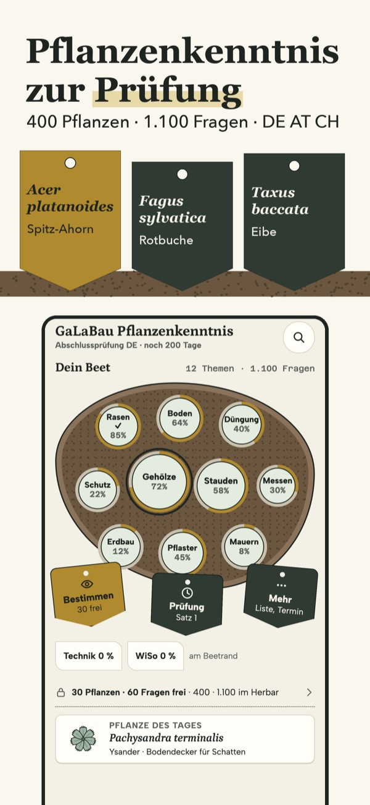
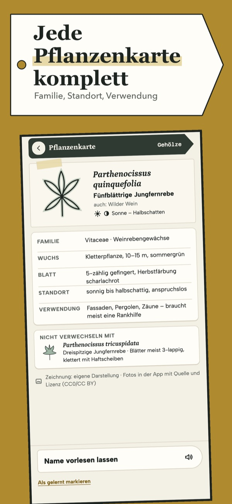
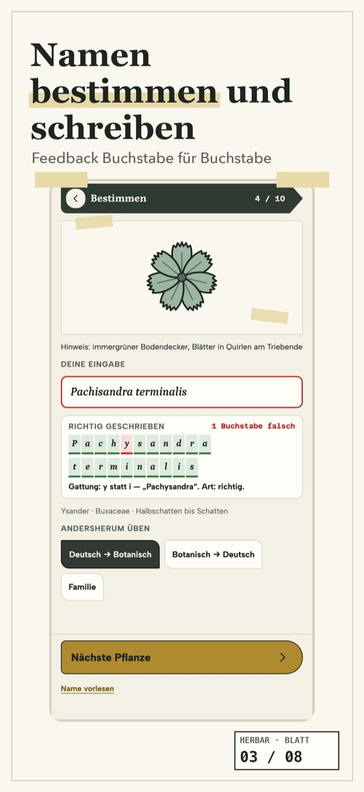

Gärtner Prüfung, Pflanzenliste
Einmal kaufen – kein Abo. GaLaBau Pflanzenkenntnis begleitet dich zur Zwischen- und Abschlussprüfung (DE), zur LAP Garten- und Grünflächengestaltung (AT) oder zum QV als Gärtner/in EFZ (CH). Wähle deine Pflanzenliste, bestimme Gehölze und Stauden an Zeichnungen und schreib den botanischen Namen – die App zeigt dir Buchstabe für Buchstabe, was stimmt.



Bald im App Store